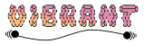

Overview¶
The vibrant code is a post-processing tool for calculating vibrational spectra from ab initio data.

Features¶
IR and Raman spectra from static calculations or ab initio molecular dynamics.
Resonance Raman spectra via efficient Padé approximation or explicit frequency sampling.
Absorption spectra computed alongside vibrational data for comprehensive analysis.
Fast and efficient post-processing of large systems and long trajectories.
Applicable to single molecules, liquids and materials
Compatibility and Applications¶
Provided that the required quantities (e.g., forces, dipole moments, polarizabilities) are available in the expected format (see File Formats) , vibrant is compatible with outputs from multiple electronic structure packages.
One example of a popular electronic structure package is CP2K. For users performing calculations with CP2K, tutorials and documentation for setting up the required electronic structure calculations can be found in the official CP2K manual and exercises.
So far, vibrant has been used in several publications to generate vibrational or electronic spectra, where the underlying electronic structure calculations were carried out using either the CP2K or FHI-aims program packages. Examples include:
Bas, E. E.; Garcia Alvarez, K. M.; Schneemann, A.; Heine, T.; Golze, D. Robust computation and analysis of vibrational spectra of layered framework materials including host–guest interactions. J. Chem. Theory Comput. 2024, 20 (21), 9547–9561. https://doi.org/10.1021/acs.jctc.4c01021
Feuerstein, L.; Bas, E. E.; Golze, D.; Heine, T.; Oschatz, M.; Weidinger, I. M. Nitrile groups as build-in molecular sensors for interfacial effects at electrocatalytically active carbon–nitrogen materials. ACS Appl. Mater. Interfaces 2025, 17 (16), 23996–24004. https://doi.org/10.1021/acsami.5c02366
Leucke, M.; Panadés-Barrueta, R. L.; Bas, E. E.; Golze, D. Analytic continuation component of the GreenX library: Robust padé approximants with symmetry constraints. J. Open Source Softw. 2025, 10 (109), 7859. https://doi.org/10.21105/joss.07859
For publication 1, the input and output files of the electronic structure calculations carried out with CP2K/FHI-aims are available in the corresponding Zenodo repository.
Quick Start¶
To get started with vibrant, see the Quick Start section of the documentation.